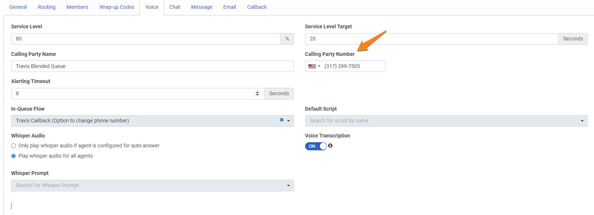

Inbound Voice

Genesys Cloud Inbound Voice
While new communication channels continue to crop up, the importance of voice remains. The speed and agility of the Genesys Cloud CX™ contact center platform connects your customer engagement with the telephony option that best fits your business needs. The widest variety of voice services connectivity options in the industry gives customers unparalleled flexibility and choice. Customers can choose Genesys Cloud CX Voice (Genesys telecom) for VoIP, or use the cloud-based Bring Your Own Carrier (BYOC) option. Customers can keep a carrier contract or existing PBX infrastructure, or consolidate using Genesys as a single vendor for all needs. Customers who choose Genesys Cloud CX are often attracted to the cloud technologies and microservices architecture that provide speed, stability, and agility for their business. Adopting a cloud solution for voice services is a future-proof approach—extending these same cloud benefits across a customer’s entire communications system.

Genesys Cloud CX Voice
Genesys Cloud CX Voice is an internet-based telephony service provided by Genesys that, when activated, provides public telephony access to Genesys Cloud CX services.
Bring Your Own Carrier (BYOC)
Genesys Cloud CX BYOC refers to the ability for customers to define SIP trunks between Genesys Cloud CX and third-party devices or services.
What We Will Build Today
Queues
Today we will be walking you through the creation of the backbone of your contact center. Genesys Cloud CX’s ACD engine uses a Queue based routing system with the ability to attach skills, languages and priority to the routing logic. We will keep it simple and start with a basic queue.
Genesys Cloud CX queues are by default equipped for omnichannel communications. Throughout this workshop, we will be routing all media types to the same queue.
Telephony
We will also be using Genesys Cloud CX Voice services today. As mentioned above, we give you the flexbility to either bring your own carrier or to use Genesys as the carrier. Either option within Genesys Cloud CX is easily managed and allows you to take advantage of cloud voice services that can be deployed in days with no hardware required. The only steps that you’ll need to take today to set up Genesys Cloud CX Voice is to purchase a phone number and assign that number to a call route. Pretty simple, right? Please note that charges do incur for purchasing a phone number, although they are minimal. Refer to this document for pricing. https://help.mypurecloud.com/articles/genesys-cloud-voice-pricing/
Architect
Setting up inbound voice capabilities also requires an Architect flow. As a matter of fact, we will be importing architect flows for every media type that we will set up today. Architect is a powerful tool that is a part of Genesys Cloud CX.
Architect is an easy-to-learn drag and drop web-based design tool that creates flows for media types. Architect uses menus and straight-to-queue logic most often associated with traditional auto-attendants. However, it also incorporates advanced, feature-rich logical operations such as non-menu digit collection, External Data Access (data dips), conditional logic, and expression editing to help develop the IVR functionality. Architect also provides centralized prompt management with multi-language support.
Architect also has an export and import option, a feature that is important for today’s workshop. What this will allow us to do is to simply give you a downloadable file for an architect flow and then you can simply import that file into your architect flow in your instance of Genesys Cloud CX. Architect is a powerful tool and it’s very fun to learn how to build Architect flows from scratch, but it is not the objective in today’s workshop. We will save that for another day!
Follow along
- Create a new queue following and name it “G Ride” (It is important to follow the naming convention because it will affect later steps)

- Add yourself as a member of the queue

- Purchase a phone number for voice (Note the number you purchased, because it is difficult to find after purchase)

- Go back into the G Ride queue and add an outbound calling number with the number you purchased for voice

- Please navigate Here and download the flow outlined in the screenshot below. Follow attached instructions to download a sample flow


-
Navigate to “Architect” on the Admin screen as demonstrated below and follow the instructions to upload an Inbound Call Flow.


-
Once you have imported the flow, select “Transfer to ACD”, select your “G Ride” queue or whichever queue you have created, and check the box next to “DTMF goes to this menu choice from any menu”. Please see screenshot below for guidance

Delete the “Transfer to User” and “Dial by Extension” tasks by following the screenshot below. When you have finished these changes, ensure you select “Publish”

- Set up a call route following these instructions (use the phone number that you purchased in step two and the Architect flow that you imported in step 4)